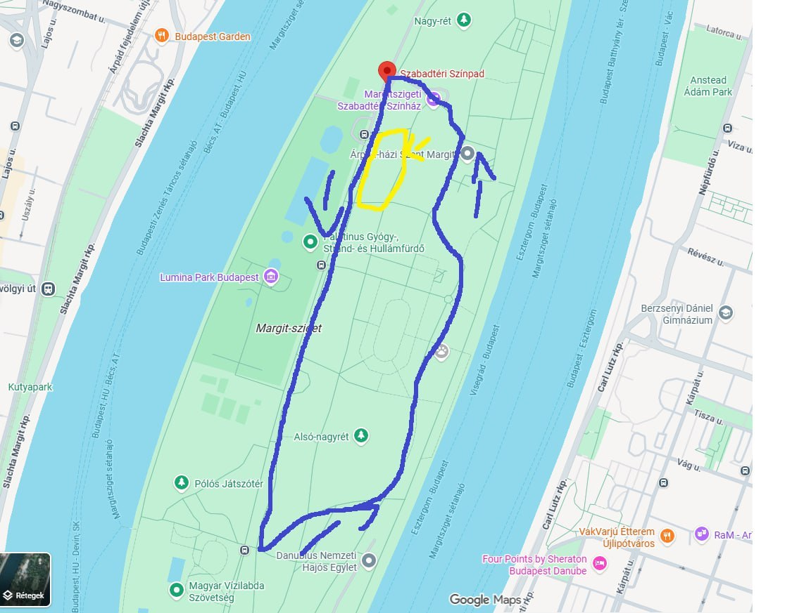

Heoo picit meg hackeltem a oldalt hehe >:3
Sziasztok szőrmókok! ^^ Szeretettel meghívnálak titeket egy suitwalk/piknikre Lindu (Mochi) születésnapja alkalmából a Margitszigetre Június 13.-án szombaton ^^

Szeretettel meghívnálak titeket egy suitwalk/piknikre
Mochi has entered the system...
LOADING...
Mivel JÚN 2.-án töltömbe a 22. szülinapomat (yeah közel vagyok a dinó korhoz mint a baba korhoz) és NEM! nem kell semmilyen ajándékkal készülni elég nagy ajándék is az ha el jössz és jól érzed magad ^^
Gyülekező 10:30 és 11:00 között a Szabadtéri színpad megállóval szembe levő félívben levő padoknál. A gyülekező hely az Árpád híd és a Nyugati Pályaudvar felől a 26-os busszal közelíthető meg.
11:00 indul a walk a Rózsa kerten át az alsó nagyrét sarkáig. Egy 10 perces pihenő lesz a rózsa kert végén a padoknál a melegre való tekintettel! Innen az állatkert mentén az ókori romokig megyünk és vissza gyülekező helyszínéig. utána amikor vissza értünk a gyülekező helyszínére ahol keresünk egy szabad részt ahova letelepszünk és kezdődhet a szabadtéri móka (tollas, labdázás, társas, kártyázás) ^^
